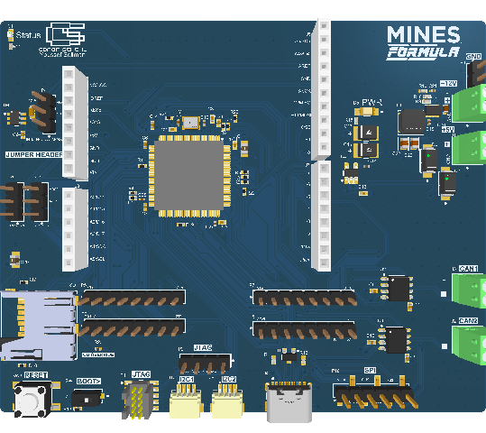
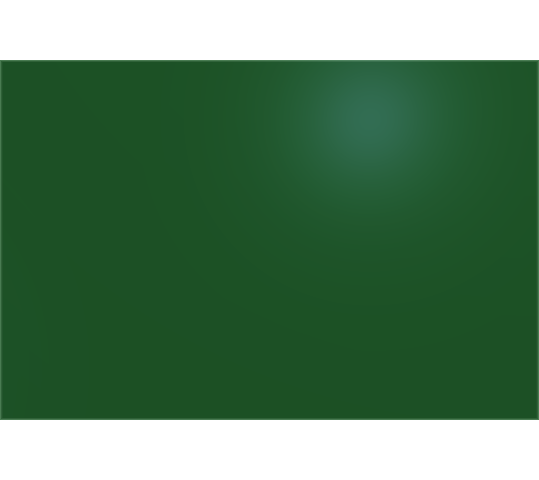
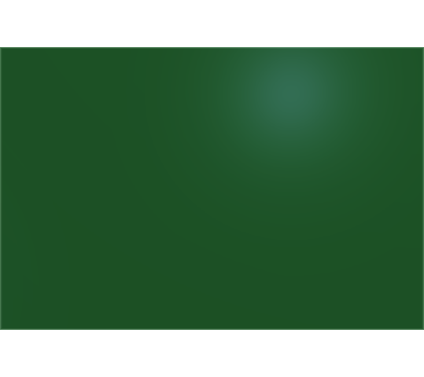
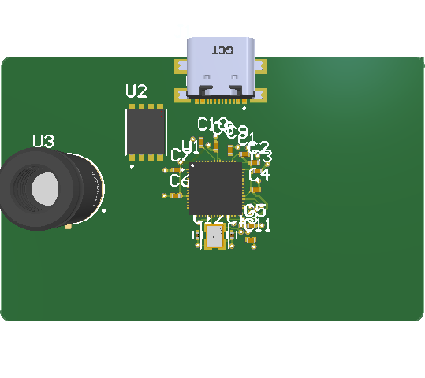
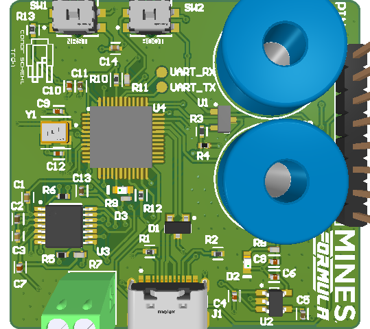

Custom STM32 Development Board
A 4-layer architecture maximizing GPIO access with Arduino shield compatibility for rapid sensor testing. Features strict EMI mitigation and >80% power conversion efficiency.
A collection of mixed-signal PCBs, embedded architectures, and hardware safety systems.

A 4-layer architecture maximizing GPIO access with Arduino shield compatibility for rapid sensor testing. Features strict EMI mitigation and >80% power conversion efficiency.

A mixed-signal board providing high-resolution sensor digitization (ADS114S08B) and high-speed RMII Ethernet telemetry, featuring heavily isolated analog and digital power domains.

A hardware-level safety barrier utilizing relays and optocouplers to physically latch and isolate critical EV fault conditions, ensuring safe shutdown independent of software control.

A standalone, credit-card-sized thermal camera featuring an MLX90640 array, external QSPI flash, and a custom LiPo Battery Management System with automatic load-sharing.

A highly accurate analog front-end utilizing an INA2332 instrumentation amplifier and hardware-level Cold Junction Compensation (CJC) for robust temperature sensing in high-EMI environments.